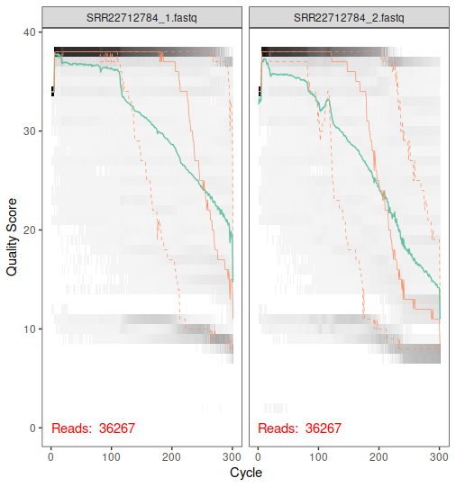
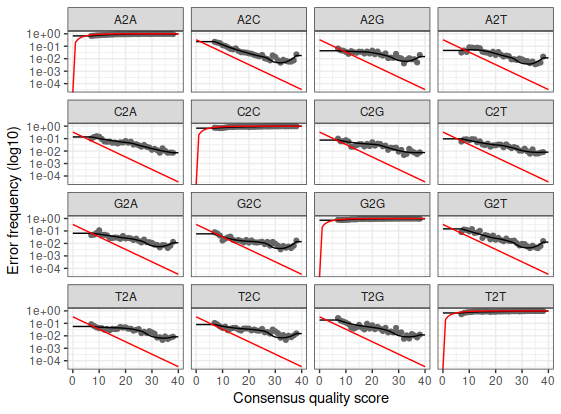
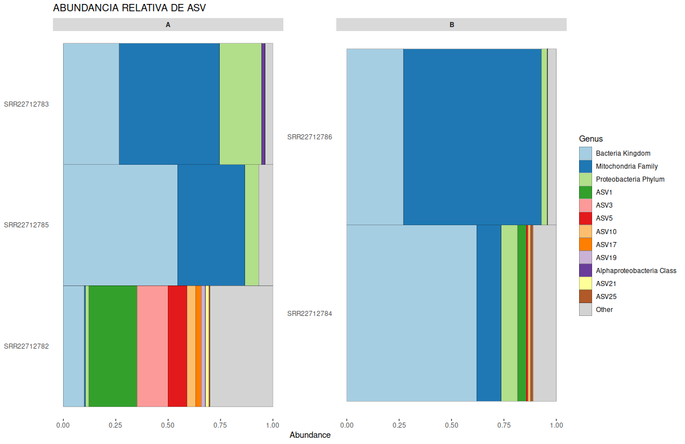

Introducción a Metagenomica
La metagenómica es una disciplina que se enfoca en el estudio del material genético contenido en muestras ambientales o comunidades microbianas complejas. En lugar de secuenciar un solo genoma, la metagenómica permite analizar todos los genes presentes en una muestra, lo que facilita la caracterización de la diversidad y función de la microbiota de un ambiente determinado.
La bioinformática metagenómica implica el análisis de datos metagenómicos. Esto incluye la identificación de genes, asignación taxonómica, predicción de rutas metabólicas y la caracterización de la diversidad microbiana en las muestras.
OTUs (Operational Taxonomic Units):
Las OTUs son unidades utilizadas para agrupar secuencias similares en análisis de metagenómica. A menudo, las secuencias se agrupan en OTUs en función de su similitud de secuencia, lo que simplifica la representación de la diversidad de la comunidad.
ASV (Amplicon Sequence Variant):
- Los ASVs son una característica central en el análisis de metabarcoding. Representan secuencias únicas de amplicones obtenidas a partir de datos de secuenciación. A diferencia de los OTUs (Operational Taxonomic Units), que se agrupan en función de similitudes arbitrarias, los ASVs son secuencias precisas que se generan mediante técnicas de denoising para eliminar ruido y duplicados. Los ASVs permiten un análisis de diversidad más preciso y detallado.
Quimeras:
- Las quimeras son secuencias de ADN artificiales que se forman durante el proceso de amplificación de secuencias de amplicones. Estas secuencias híbridas son una combinación de fragmentos de ADN diferentes y son problemáticas en el análisis de metabarcoding, ya que pueden llevar a identificaciones taxonómicas erróneas. La detección y eliminación de quimeras son esenciales para garantizar la precisión de los resultados.
Denoising:
- El denoising es el proceso de eliminar ruido y errores de secuenciación de los datos de amplicones. Esto implica identificar y eliminar secuencias erróneas o duplicados, lo que conduce a la obtención de secuencias de alta calidad. El denoising es fundamental para obtener una representación precisa de la diversidad microbiana en una muestra.
Estos conceptos son fundamentales para comprender y realizar un análisis de metabarcoding exitoso. Los ASVs permiten una resolución taxonómica precisa, mientras que la detección de quimeras y el denoising son pasos críticos para garantizar la calidad de los datos y los resultados.
source("install.R", local = TRUE)
source("scripts/sratoolkit.R", local = TRUE)
source("scripts/listfastq.R", local = TRUE)
source("scripts/filtereads.R", local = TRUE)
source("scripts/consensus.R", local = TRUE) Descargar secuencias
download_sra_files(id = "SRR22712782")
download_sra_files(id = "SRR22712783")
download_sra_files(id = "SRR22712784")
download_sra_files(id = "SRR22712785")
download_sra_files(id = "SRR22712786")Calidad y filtrado Secuencias
lecturas <- list_fastq(pattern = c("_1.fastq","_2.fastq"))
plotQualityProfile(c(lecturas$lf[3],lecturas$lr[3]))
############### Filter reads from fastq files ###############
#############################################################
log_filter <- filter_reads(name = lecturas$name, lf = lecturas$lf,
lr = lecturas$lr, trunc = 300)
Modelar los errores de secuenciación
learnErrors()es un paso crítico en el procesamiento de datos de secuenciación de amplicones, ya que permite modelar y comprender los errores de secuenciación en las secuencias
filtF <- file.path("data/processed_data/filtered_F", paste0(lecturas$name, "_filt_1.fastq"))
filtR <- file.path("data/processed_data/filtered_R", paste0(lecturas$name, "_filt_2.fastq"))
errR <-learnErrors(filtR, multithread = T)
errF <-learnErrors(filtF, multithread = T)
#grafica del modelo de error
plotErrors(errF,nominalQ = T)
plotErrors(errR,nominalQ = T)
Inferencia de ASV
- La función
dada()utiliza el modelo de errores para identificar y corregir errores en las secuencias de amplicones. Luego, se generan las Amplicon Sequence Variants (ASVs), que son secuencias únicas y precisas representativas de la diversidad en la muestra. Estas ASVs son el equivalente de los OTUs (Operational Taxonomic Units), pero con una mayor resolución y precisión.
dadaF <- dada(filtF, err = errF, multithread = T)
dadaR <- dada(filtR, err = errR, multithread = T)Denoising data
## merge o pariar o fusion de secuencias----
pareadas <- mergePairs(dadaF, filtF, dadaR, filtR, verbose = T)
## construir tabla de secuencias----
seqTab <- makeSequenceTable(pareadas)
## eliminar quimeras
seqtab_nochim <- removeBimeraDenovo(seqTab, method = "consensus"
, multithread = T,
verbose = T)
rownames(seqtab_nochim) <- sub("_filt_1.fastq", "", rownames(seqtab_nochim), fixed = TRUE)
write.csv2(seqtab_nochim,paste0(getwd(),"/results/seqtab_nochim.csv"))En resumen, la función dada() es un paso crítico en el procesamiento de datos de metagenómica, ya que se encarga de eliminar errores y generar ASVs a partir de secuencias de amplicones. Esto mejora significativamente la calidad de los datos y la precisión en la representación de la diversidad microbiana en una muestra.
Asignación taxonomica
La asignación taxonómica implica comparar las secuencias de amplicones con las secuencias de referencia en la base de datos y determinar a qué taxones (por ejemplo, género, especie, familia, etc.) pertenecen las secuencias ver silva_db
### Descarga de silva db
download.file("https://zenodo.org/records/3986799/files/silva_nr99_v138_train_set.fa.gz?download=1", "data/reference/silva_nr99_v138_train_set.fa.gz")
## Asignación taxonomica
ruta_clasificador <- "data/reference/silva_nr99_v138_train_set.fa.gz"
taxa <- assignTaxonomy(seqtab_nochim, ruta_clasificador , multithread = TRUE)Creacion de objeto Phyloseq
- Se crea el objeto
phyloseq_obutilizando la funciónphyloseq(). Este objeto integra varios componentes esenciales para el análisis de microbiome, que incluyen:otu_table: Representa la tabla de abundancia de las Amplicon Sequence Variants (ASVs) o similares. En este caso, se utiliza la variableseqtab_nochimpara construir esta parte del objeto.sample_data: Contiene los metadatos asociados a cada muestra. En este caso, se utiliza la variablemetpara proporcionar esta información.tax_table: Almacena la información taxonómica asignada a las secuencias. Se utiliza la variabletaxapara crear esta parte del objeto.
library(phyloseq)
## uso de metadata
met <- read.csv("data/Metadata.csv", row.names = 1)
met <- met[order(lecturas$name),]
## apoyo phyloseq:generar tablas
phyloseq_ob <- phyloseq(otu_table(seqtab_nochim, taxa_are_rows = F),
sample_data(met),
tax_table(taxa))Exportar datos de ASV
## extraer nombres de los ASV
dna <- Biostrings::DNAStringSet(taxa_names(phyloseq_ob))
names(dna) <- taxa_names(phyloseq_ob)
ps <- merge_phyloseq(phyloseq_ob, dna)
taxa_names(ps) <- paste0("ASV", seq(ntaxa(ps)))
## exportar secuencias representativas
#exportar archivo fasta: futuros arboles filogeneticos
names(dna) <- taxa_names(ps)
writeXStringSet(dna, "results/rep-seq.fna")Exportar datos taxonomicos
## exportar tabla de taxonomia
TAX <- as(tax_table(ps), "matrix")
write.csv(TAX,"results/taxa-gut16.csv")
## Exportar tablas de ASV"s
ASV <- as(otu_table(ps),"matrix")
ASV <- t(ASV)
colnames(ASV) <- gsub("_filt_1.fastq.gz","",colnames(ASV), fixed = TRUE)
write.csv(ASV, "results/asv-table.csv")Importar datos y guardar Rdata
### importar tablas de ASV
asv_table <- read.csv("results/asv-table.csv", row.names = 1, header = T)
class(asv_table)
### crear o convertir a tabla tipo phyloseq
ASV <- otu_table(asv_table, taxa_are_rows = T)
class(ASV)
ASV
### importar tabla de taxonomia
taxonomy <- read.csv(file = "results/taxa-gut16.csv", header = T, row.names = 1)
### Creando un objeto con los Taxa
TAX <- tax_table(as.matrix(taxonomy))
### Creando un objeto physeq de prueba
physeq <- phyloseq(ASV, TAX)
random_tree = rtree(ntaxa(physeq), rooted=FALSE, tip.label=taxa_names(physeq))
### Importar tabla de metadatos
metadata <- read.csv("data/Metadata.csv", header = T, row.names = 1)
### Convertir tabla a tipo phyloseq
META <- sample_data(metadata)
### construir phyloseq final
ps <- merge_phyloseq(physeq, META, random_tree)
ps
saveRDS(ps, "results/objeto_phyloseq.RDS")Cargar Rdata y rearefacción
Rarificación: - El término “rarefacción” se refiere a la práctica de estandarizar el número de secuencias o lecturas en todas las muestras de un conjunto de datos. Esto se hace para abordar desigualdades en la profundidad de secuenciación entre muestras, lo que puede influir en los análisis de diversidad y en la comparación entre muestras.
ps <- readRDS("results/objeto_phyloseq.RDS")
set.seed(1)
ps_rar <- rarefy_even_depth(ps, sample.size = 1200)
saveRDS(ps_rar,"results/phyloseq_rar")Gráficas para metagenómica
BiocManager::install(c("phyloseq", "microbiome", "ComplexHeatmap"), update = FALSE)
install.packages(
"microViz",
repos = c(davidbarnett = "https://david-barnett.r-universe.dev", getOption("repos"))
)
library(microViz)- En esta sección, se realiza una visualización de la abundancia relativa de los ASVs a nivel de género. Se genera un gráfico de barras utilizando la función
comp_barplot(). El gráfico muestra los 12 géneros más abundantes en cada muestra y se utilizamerge_other = TRUEpara agrupar los géneros menos abundantes en una categoría llamada “Other”.
#importar objeto phyloseq (ps)
ps <- readRDS("results/objeto_phyloseq.RDS")
## Corregir NA's
new_ps <- ps %>% tax_fix(unknowns = c("endosymbionts"))
new_ps <- ps %>% tax_fix(unknowns = c("Unknown Family"))
## plot
new_ps %>%
comp_barplot("Genus", n_taxa = 12, merge_other = TRUE) +
facet_wrap(vars(location), scales = "free") + # scales = "free" is IMPORTANT!
coord_flip() +
ggtitle(
"ABUNDANCIA RELATIVA DE ASV",
) +
theme(axis.ticks.y = element_blank(), strip.text = element_text(face = "bold"))
Pasos de Ejecución del Tutorial:
- Cargar Librerías y Scripts:
- Se cargan las librerías y scripts necesarios para el análisis.
- Descargar Secuencias:
- Se descargan las secuencias desde una fuente específica utilizando códigos de acceso.
- Calidad y Filtrado de Secuencias:
- Se evalúa la calidad de las secuencias y se filtran aquellas que no cumplen con los estándares de calidad.
- Se realiza un análisis de calidad de las secuencias.
- Se filtran las secuencias para eliminar aquellas de baja calidad.
- Modelar los Errores de Secuenciación:
- Se modelan los errores de secuenciación para comprender y corregir los errores presentes en las secuencias.
- Inferencia de ASV (Amplicon Sequence Variant):
- Se realiza la inferencia de las Amplicon Sequence Variants (ASVs), que representan secuencias precisas y únicas generadas a partir de datos de secuenciación.
- Denoising de Datos:
- Se realiza el proceso de denoising para eliminar ruido y duplicados de las secuencias, mejorando la calidad de los datos.
- Asignación Taxonómica:
- Se asigna una clasificación taxonómica a las secuencias utilizando una base de datos de referencia.
- Creación de Objeto Phyloseq para Análisis de Microbioma:
- Se crea un objeto Phyloseq que integra información sobre la tabla de abundancia de ASVs, metadatos y taxonomía.
- Exportar Datos de ASV:
- Se exportan las secuencias representativas de los ASVs y la información taxonómica.
- Importar Datos y Guardar en Formato RDS para Reanálisis:
- Se importan los datos de ASVs y se almacenan en un formato RDS para futuros análisis.
- Realizar Rarificación para Igualar la Profundidad de Secuenciación entre Muestras:
- Se realiza la rarificación para estandarizar el número de secuencias en todas las muestras, abordando desigualdades en la profundidad de secuenciación.
- Visualizar la Abundancia Relativa de ASVs y Realizar Correcciones Taxonómicas:
- Se visualiza la abundancia relativa de ASVs a nivel de género y se aplican correcciones taxonómicas en caso de identificaciones incorrectas.